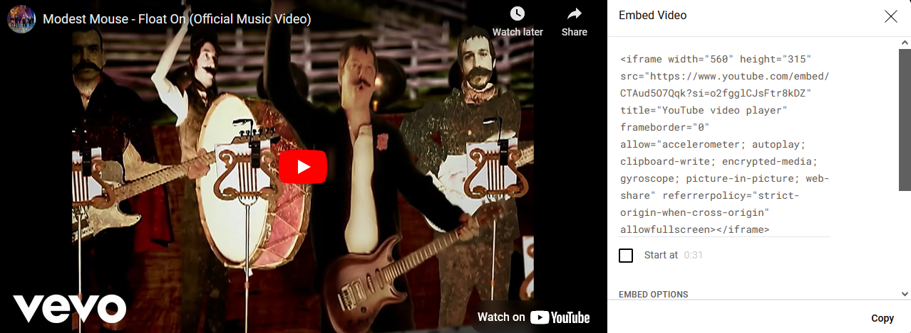

How to Embed Outside Videos Into a Webpage
By: Miles V
Steps:
- Create your HTML file
- If you have your video, find the share button (most video sites have them)
- If it's available, use the embed option (If there is no option to get shareable code, copy the link and put it into an iframe tag)
- If an embed option was available, make any changes you want to the video before copy and pasting the code into your HTML file

- And voila! You have a external video that can play within your own webpage. If you wish to make any further edits, you can do so inside the iframe tag